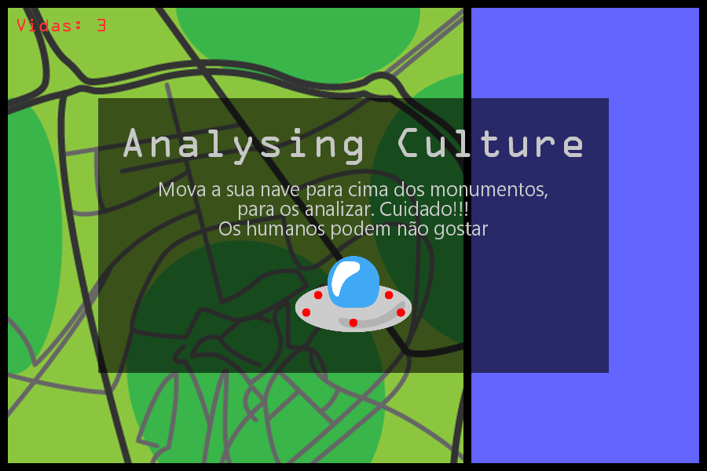
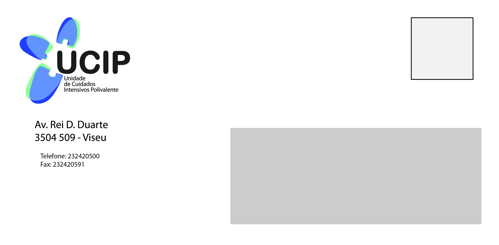
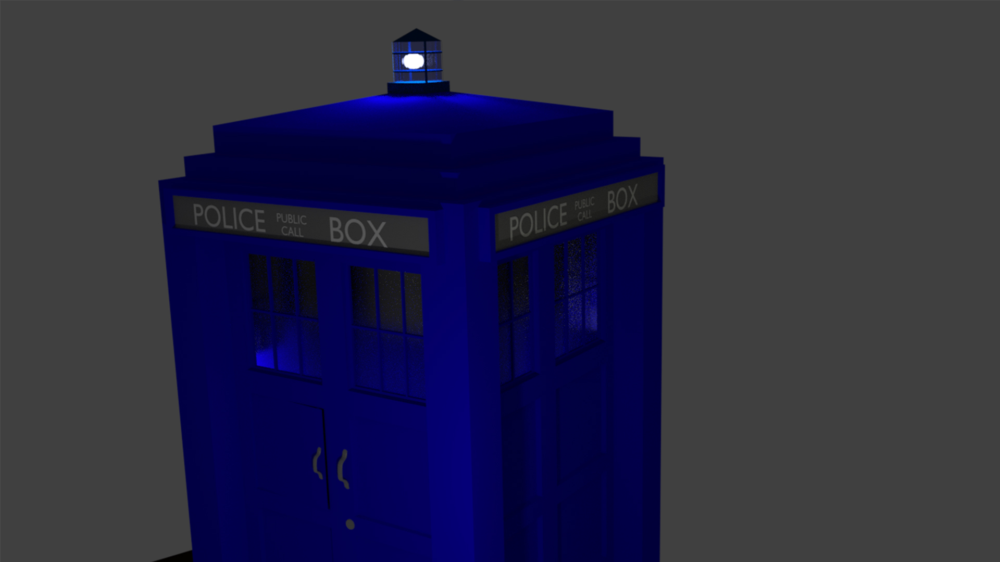
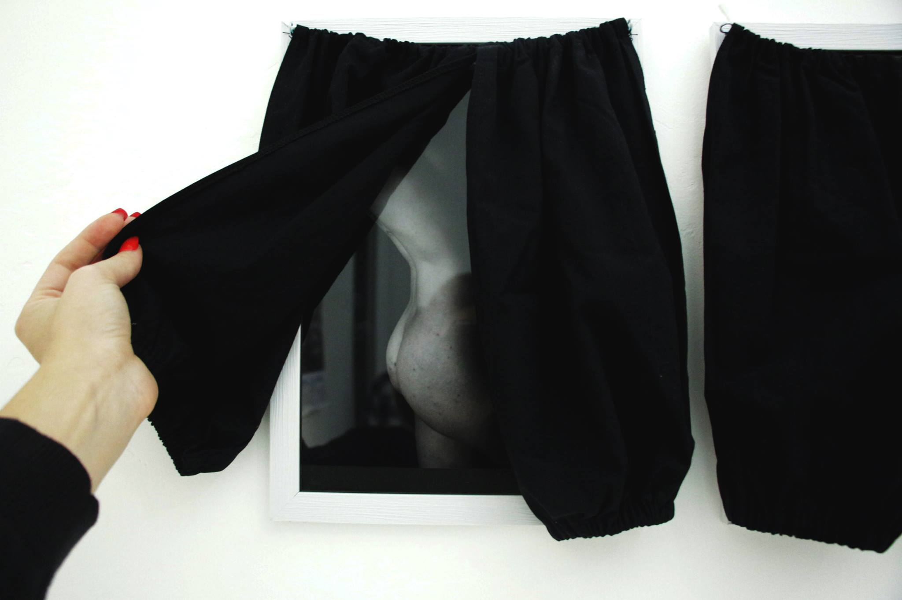

Galeria
Trabalhos realizados em diversas áreas, desde artes plásticas à multimédia.


Analysing Culture
Trabalho realizado na disciplina de Atelier Multimédia II, do curso de Artes Plásticas e Multimédia, no Instituto Politécnico de Viseu. O objetivo era criar uma micro instalação relacionada com um videojogo, utilizando open hardware (arduino), com o tema “O património cultural, uma chave para o futuro.”


Gravura em placa de zinco
Trabalho de impressão em placa de zinco, realizado para a cadeira de Técnicas Artísticas I - Gravura durante a licenciatura em Artes Plásticas e Multimédia.


Logótipo UCIP Viseu
Trabalho realizado na disciplina de Design de Comunicação I, do curso de Artes Plásticas e Multimédia, no Instituto Politécnico de Viseu. A proposta foi criar a identidade gráfica da Unidade de Cuidados Intensivos Polivalente do Centro Hospitalar Tondela-Viseu, proposta pelo próprio hospital. No final, o meu design foi um dos escolhidos para ser apresentado ao hospital, acabando o concurso por ser cancelado devido a divergências na direção do hospital. Não obtendo assim, uma decisão final sobre os vários trabalhos da turma.

TARDIS
Trabalho realizado na disciplina de Animação Multimédia II, do curso de Artes Plásticas e Multimédia, no Instituto Politécnico de Viseu. O trabalho consistia em modelar um objeto para fazer depois um “turnaround” do produto, que seria colocar a câmara a girar a volta do objeto, para o visualizarmos por todos os lados.
Concertos
Fotografia de concertos a que vou assistindo.


Retratos
Retratos de pessoas em várias situações.


Animais
Fotografias de vários animais que vou tirando ao longo dos anos


Dressed
Dressed, um projeto que aborda a fotografia de nu, tem como objetivo levar as pessoas a questionar o que define cada fotografia de nu como arte ou não, numa sociedade em que somos constantemente bombardeados com imagens de mulheres nuas em publicidade e programas de televisão. Criei uma exposição que questiona alguns atos que vemos todos os dias em relação ao nu que nos passam despercebidos, que leva as pessoas a interagir com as fotografias criadas e questionar esses mesmos atos.


